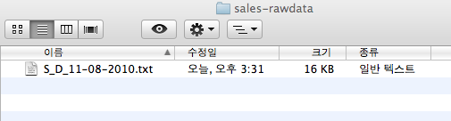
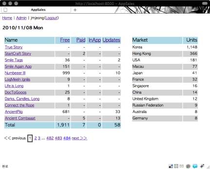
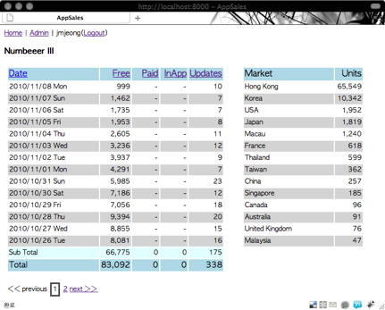

index
Table of Contents
1 Django-appsales appsales python django
django-appsales는 iTunesConnects의 application sales report를 다운로드 받아 DB에 넣어서 여러 view로 sales report를 보기 위한 프로그램입니다.
1.1 Installation
1.1.1 사전 필요 사항
이 프로그램을 구동하기 위해서는 다음과 같은 프로그램이 필요합니다.
- django 1.2.3
- django-extensions
- django-pagination
Python package가 인스톨되어 있으면
easy_install 명령을 이용하여 시스템에 필요 package를 인스톨할 수 있습니다.
sudo easy_install django django-extensions django-pagination
1.1.2 Downloads
git clone git://github.com/django-appsales appsales
1.1.3 설치
- 설정
settings.py에서 필요한 설정을 조정합니다.자동화를 위해서
APPSTORE_ID와APPSTORE_PW항목을 설정합니다.# Local settings ############################## # iTunes Store AppStore ID APPSTORE_ID = '' # iTunes Store AppStore PW APPSTORE_PW = ''
- 기본설치
다운로드 받은 appsales directory에서
./manage.py syncdb를 입력합니다. 프로그램 수행 중간에 admin 계정 설정을 묻는 항목이 나옵니다.jmjeong-ui-MacBook-Pro:appsales jmjeong$ ./manage.py syncdb Creating table auth_permission Creating table auth_group_permissions Creating table auth_group Creating table auth_user_user_permissions Creating table auth_user_groups Creating table auth_user Creating table auth_message Creating table django_content_type Creating table django_session Creating table django_site Creating table sales_app Creating table sales_date Creating table sales_country Creating table sales_sales Creating table django_admin_log You just installed Django's auth system, which means you don't have any superusers defined. Would you like to create one now? (yes/no): yes Username (Leave blank to use 'jmjeong'): E-mail address: jmjeong@gmail.com Password: Password (again): Superuser created successfully. Installing index for auth.Permission model Installing index for auth.Group_permissions model Installing index for auth.User_user_permissions model Installing index for auth.User_groups model Installing index for auth.Message model Installing index for sales.Sales model Installing index for admin.LogEntry model Installing json fixture 'initial_data' from absolute path. Installed 245 object(s) from 1 fixture(s) jmjeong-ui-MacBook-Pro:appsales jmjeong$ - 서버구동
django기본 서버를 이용하여 web server를 구동할 수 있습니다.jmjeong-ui-MacBook-Pro:appsales jmjeong$ ./manage.py runserver Validating models... 0 errors found Django version 1.2.3, using settings 'appsales.settings' Development server is running at http://127.0.0.1:8000/ Quit the server with CONTROL-C.
시스템 서버 구동은 Django deployment를 참고하십시오.
- 웹브라우저에서 접속
http://localhost:8000으로 접속하여, 앞서 만든 계정으로 login하면 아래와 같은 화면을 볼 수 있습니다.
- 데이타 입력
./manage.py runjob populate를 이용해서 데이타를 입력합니다. DB에 import되는 data는 iTunesConnect에서 다운로드 받은 Sales data입니다.
settings.py에 정의된DATA_DIR에 위치한 파일 중에서 정의된 Prefix를 가진 파일을 읽어 들입니다.jmjeong-ui-MacBook-Pro:appsales jmjeong$ ./manage.py runjob populate Populate data files in [/Users/jmjeong/django/appsales/sales-rawdata] [2010/11/08] is now processing...
DATA_DIR에 있는 파일 중에서S_D_mmddyyyy.txt이나S_D_mm-dd-yyyy.txt와 같은 형태의 파일만 읽어서 처리합니다. 이미 처리된 파일은 중복처리가 되지 않기 때문에 이 명령은 여러번 사용해도 무관합니다.
1.2 자동화
AppDailySales는 iTunes Connect web site로부터 daily sales data를 자동으로 다운로드 받는
python script입니다. ./utils/appdailysales.py는 AppDailySales에 아래와 같은 수정을 하였습니다.
- 이미 다운로드 받은 report는 받지 않기
- Option과는 상관없이 현재 iTunes Connect에서 모든 daily sales report를 받기
./manage.py runjob download를 하면 settings.py에 설정된 Id, Pw를 이용하여
sales data를 받아서 DATA_DIR에 저장을 합니다.
jmjeong-ui-MacBook-Pro:appsales jmjeong$ ./manage.py runjob download Report file downloaded: ['/Users/jmjeong/django/appsales/sales-rawdata/S_D_11-09-2010.txt']
- Crontab에 등록
cron.shscript는 iTunesConnect site로부터 sales data를 download하여 DB에 저장하는 script입니다.crontab -e를 이용하여 system의 crontab에 등록합니다.@daily /path/to/cron.sh
1.3 Screenshots
-
메인 페이지

-
항목별로 Sort

-
Application별 통계

Date: 2010-11-16 23:39:07 KST
HTML generated by org-mode 6.33x in emacs 23